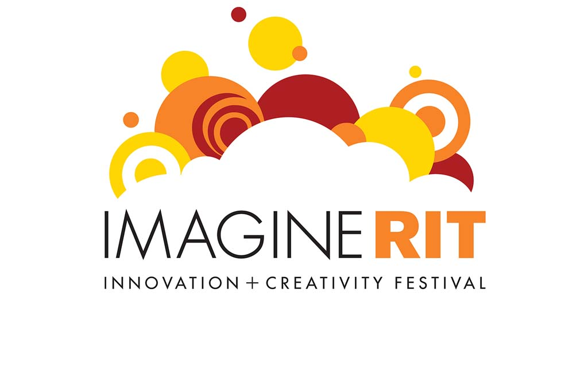

Motion Design / Branding / 3D Modelling
ImagineRIT Bumper
Overview
Created in Cinema4D, my goal for this project was to create a fun, colorful bumper to invite the community to a day of innovation and creativity. This bumper was used as a social media tool to spread awareness about the festival .
Original logo

One of the challenges of the project was translating the 2D Imagine RIT Logo into 3D and having the right amount of depth. I also had to change the color scheme to be more inviting to the young audience that visit.